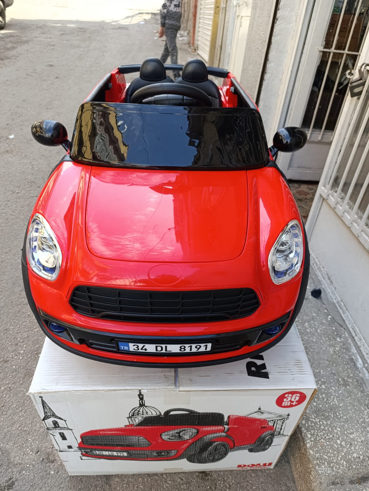
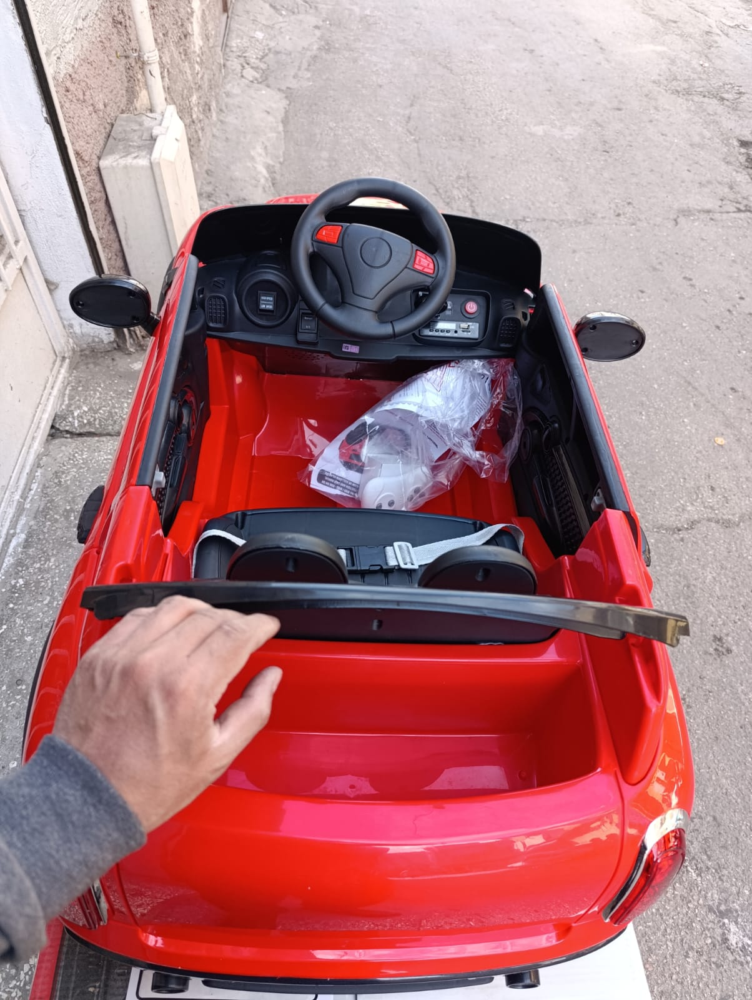
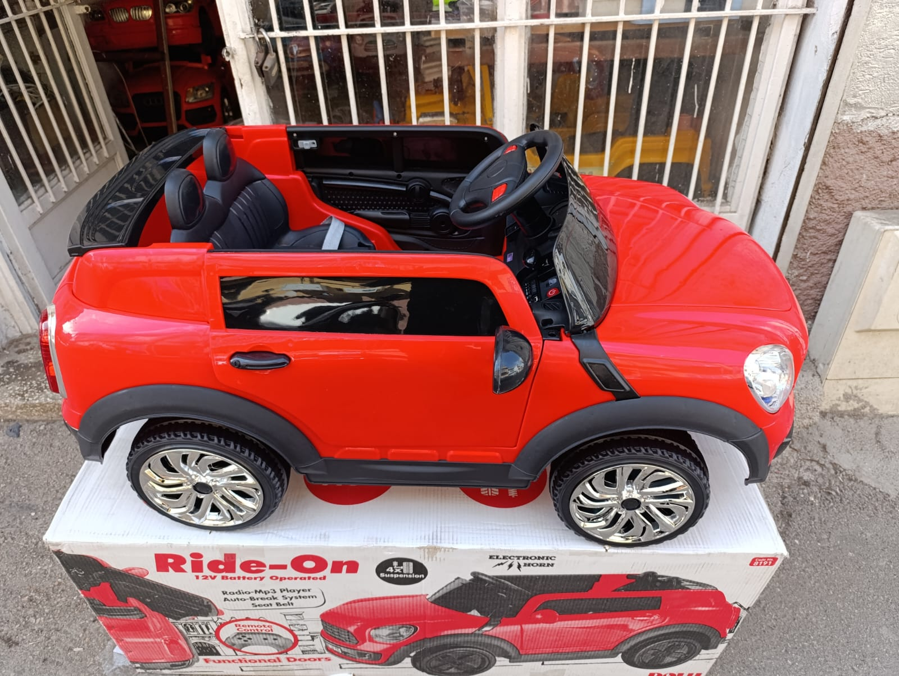

Galeriye Dön
Mini Cooper Stil - Kırmızı



Teknik Özellikler
Klasik Mini Cooper'ın zamansız cazibesini taşıyan bu canlı kırmızı akülü araba, çocukların sürüş keyfini ikiye katlayacak! Kompakt boyutları, sevimli tasarımı ve fonksiyonel özellikleri ile hem şık hem de eğlenceli bir seçenektir.
- Akü: 12 Volt (Genellikle 7Ah)
- Motor: Çift Motor (Daha iyi performans için)
- Hız: 3-6 km/s
- Koltuk: Tek Kişilik Stil Sahibi Koltuk
- Uzaktan Kumanda: 2.4 Ghz Ebeveyn Kontrolü
- Aydınlatma: Çalışan LED Ön Farlar ve Arka Lambalar
- Kapılar: Fonksiyonel Açılabilir Kapılar
- Multimedya: MP3 Çalar, USB/AUX Girişi, Dahili Müzikler ve Korna
- Taşıma Kapasitesi: Maksimum 30 kg
- Uygun Yaş Aralığı: 3 - 6 Yaş
- Emniyet Kemeri: Mevcut
- Ekstra: Mini Cooper Tasarım Detayları, Yavaş Kalkış (Soft Start), Akü Seviye Göstergesi
- Renk: Parlak Kırmızı
- Ürün Ölçüleri: (Yaklaşık 110 x 60 x 50 cm - Modelden modele değişebilir)